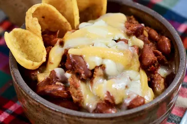

delicious and crumchy
all chili ingridients
gloves garlic,1large onion
chili powder,salt,can crushed tomatoes,oil,water,ground cumin etc
add ground beef,stir until browned and crumbly,pour oil add onion,garlic and salt and cook until soft.make a whole in the middle and pour chili pouder and cumin
chili powder,oil,garlic,cumin etc